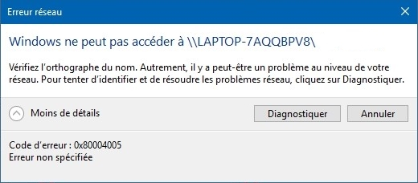
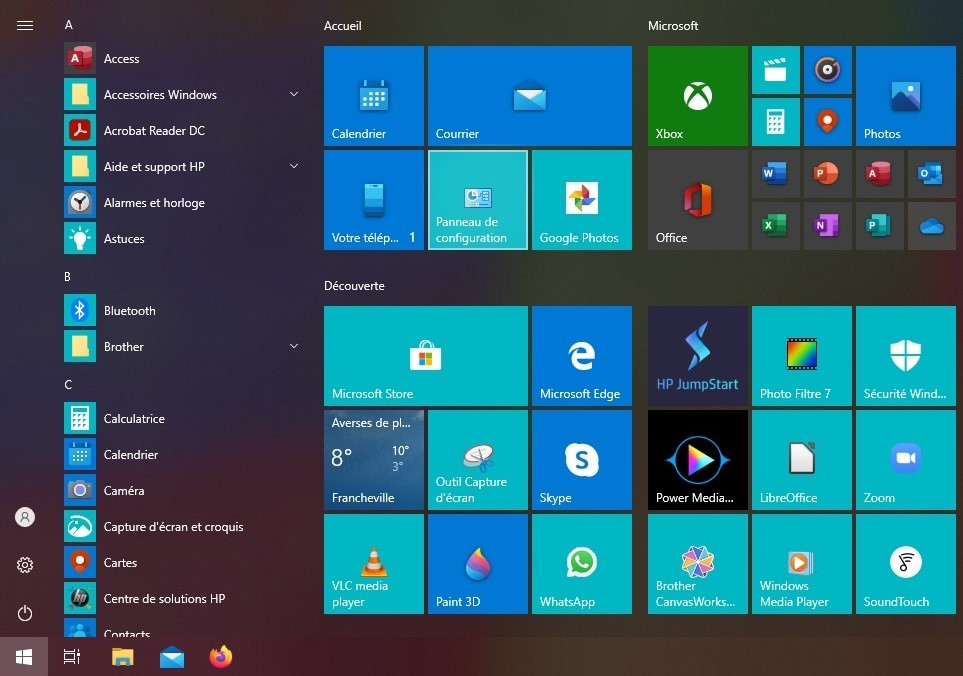
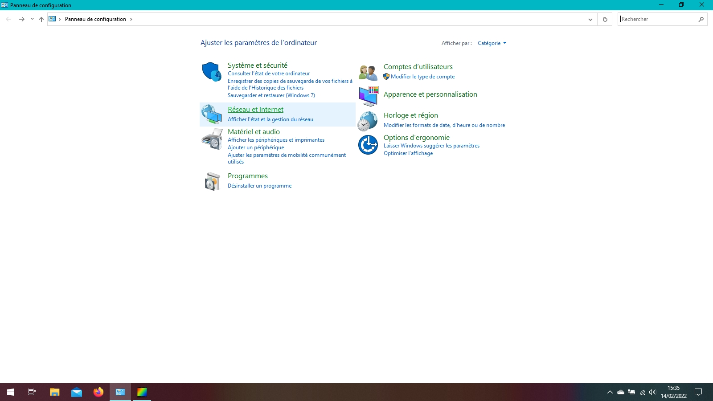
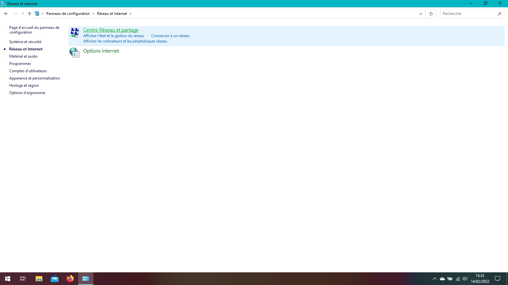
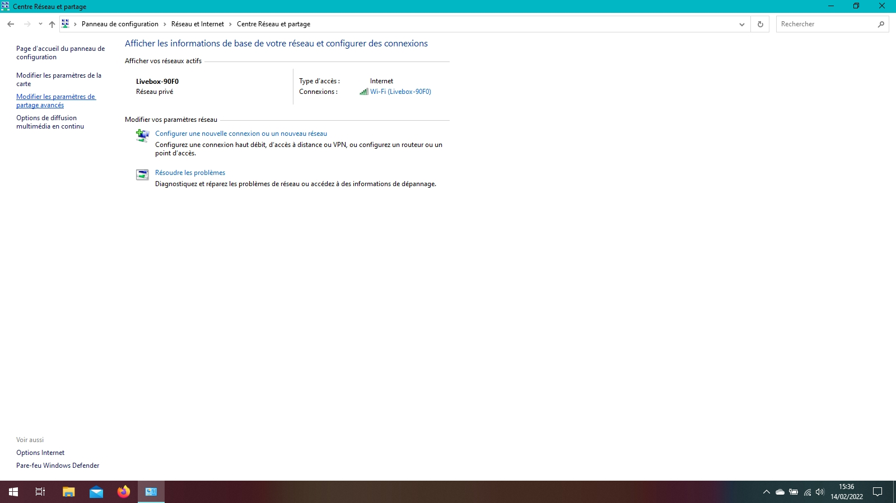
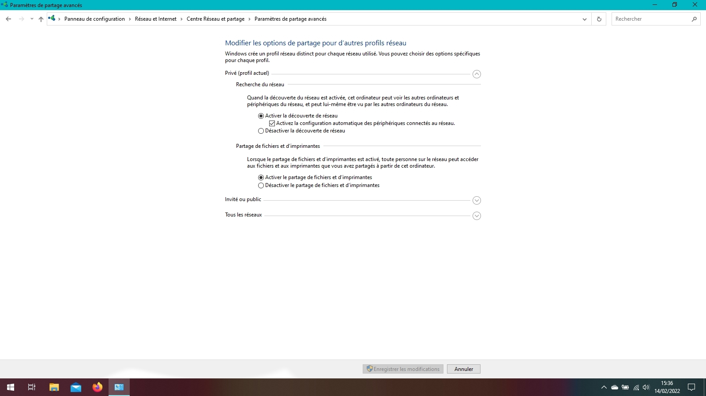

Vous essayez d'accéder aux fichiers d'un ordinateur sans fil et vous obtenez cet erreur ? Nous sommes là pour vous aider.
Vérifier l'état de votre connexion et de celle de votre ordinateur distant.
Vérifier également que l'ordinateur distant autorise l'accès aux fichiers. Pour cela, allez dans le menu Démarrer et panneau de configuration
Cliquez sur Réseau et Internet
Cliquez sur Centre Réseau et partage
Cliquez sur modifier les paramètres de partage avancés
Vérifier que les paramètres correspondent à l'image ci-dessous :
Si c'est le cas, essayez la même chose avec le PC depuis lequel vous souhaiter lire les fichiers.